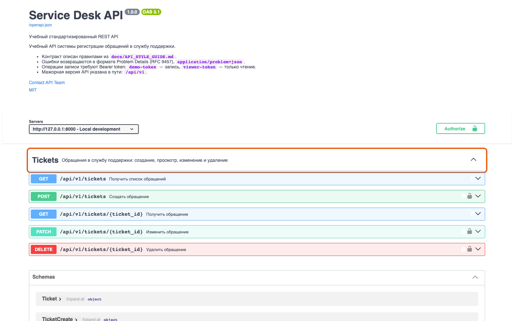

Справочник «Стандартизация HTTP API» · модуль 3 · OpenAPI
Глава 3.2
Разделы
документа
Документ OpenAPI собран из нескольких разделов верхнего уровня, и каждый отвечает за свой слой контракта. Разберём их по порядку на описании учебного сервиса: кто мы, где нас найти, какие есть операции, какие данные они принимают и чем защищены.
- Категория
- Описание контракта
- Уровень
- Базовый
- Связанные главы
- 3.1 Зачем описание · 3.3 FastAPI и OpenAPI · 6.2 Линтер
- Зачем это знать
- Чтобы читать чужое описание и понимать, чего в вашем не хватает
§1Карта документа
Файл описания — это один объект с несколькими полями верхнего уровня. Порядок в файле произвольный, но читать удобно в том порядке, в каком они перечислены ниже.
openapi.yaml
3.1.0Полный файл учебного сервиса открывается по адресу http://127.0.0.1:8000/openapi.json. Он большой — около тысячи строк — но состоит из повторяющихся кусков: разобрав один, вы прочитаете остальные.

openapi, info, servers, начало paths.§2info: кто это и какая версия
Раздел info отвечает на вопросы: что это за API, какая версия контракта, для чего он нужен и к кому идти с вопросами.
info:
title: Service Desk API
summary: Учебный стандартизированный REST API
description: |
Учебный API системы регистрации обращений в службу поддержки.
…
contact:
name: API Team
email: api-team@example.edu
url: https://github.com/MaximBytecamp/api-standard-template
license:
name: MIT
identifier: MIT
version: 1.1.0Поля title, version, description и contact обязательны не по спецификации, а по правилам проекта — и это осознанное ужесточение. Zalando в своих правилах (рекомендация 218 «MUST contain API meta information») требует того же набора: название, версия по Semantic Versioning, описание и контакты владельца.
Вопрос по API может задать человек, который не знает ни автора описания, ни его команды. Поле contact — единственное место в контракте, где указано, к кому обращаться. В учебном проекте оно проверяется правилом линтера info-contact, и его отсутствие роняет сборку.
§3servers: где доступен API
Раздел перечисляет адреса, по которым сервис работает. У каждого адреса — описание, чтобы человек не перепутал тестовый контур с рабочим.
servers:
- url: http://127.0.0.1:8000
description: Local developmentВ рабочем API таких записей обычно несколько: production, staging, песочница. Swagger UI покажет их списком, и запрос уйдёт на выбранный. Ошибиться сложнее — а это как раз тот случай, когда ошибка дорогая.
servers:
- url: https://api.example.com/api/v1
description: Production
- url: https://stage-api.example.com/api/v1
description: Staging§4tags: группы операций
Когда операций больше десятка, плоский список становится нечитаемым. Теги группируют операции по предметной области и задают порядок в документации.
tags:
- name: Tickets
description: Обращения в службу поддержки: создание, просмотр, изменение и удалениеКаждая операция ссылается на тег своим полем tags. В учебном сервисе тег один — обращений всего один ресурс. В рабочем API теги обычно повторяют разделы предметной области: Tickets, Users, Reports, Authentication.

tags. Операции без тега попадают в общий раздел default — правило проекта это запрещает.§5paths: адреса и операции
Главный раздел документа. Ключ — адрес ресурса, внутри — операции по методам, у каждой операции — параметры, тело и ответы.
paths:
/api/v1/tickets:
get:
tags: [Tickets]
summary: Получить список обращений
description: Возвращает страницу обращений. Размер страницы ограничен параметром limit.
operationId: listTickets
parameters:
- name: status
in: query
required: false
schema: { $ref: '#/components/schemas/TicketStatus' }
- name: limit
in: query
schema: { type: integer, minimum: 1, maximum: 100, default: 20 }
responses:
'200':
description: Successful Response
content:
application/json:
schema: { $ref: '#/components/schemas/TicketPage' }
'422':
description: Validation Error
content:
application/problem+json:
schema: { $ref: '#/components/schemas/ProblemDetails' }client.listTickets().стабильноin: query, in: path, in: header) и схемы значения.входОбратите внимание: у ответа 422 media type другой — application/problem+json. Так требуют правила проекта: все ошибки описываются единым форматом, и это проверяет линтер.
§6components: переиспользуемые части
Одна и та же схема нужна в нескольких операциях. Чтобы не копировать её, описание выносят в components и ссылаются через $ref.
components:
schemas:
Ticket: { … }
TicketCreate: { … }
TicketUpdate: { … }
TicketPage: { … }
ProblemDetails: { … }
headers:
XRequestId:
description: Идентификатор запроса: значение клиента или UUID, созданный сервером
schema: { type: string }
securitySchemes:
BearerAuth:
type: http
scheme: bearerВыгода не только в объёме файла. Схема, описанная один раз, меняется один раз: добавили в Ticket поле — оно появилось во всех ответах, которые на неё ссылаются. При копировании такое изменение неизбежно где-нибудь забудут.
Правило простое: всё, что встречается в описании дважды, выносится в components.
§7security: чем защищено
Схема безопасности объявляется в components.securitySchemes, а операции ссылаются на неё полем security.
post:
tags: [Tickets]
summary: Создать обращение
operationId: createTicket
security:
- BearerAuth: []Пустой массив рядом с именем схемы означает «никаких дополнительных разрешений не требуется» — он нужен для схем OAuth 2.0, где там перечисляют scopes. Для Bearer-токена массив остаётся пустым.
Из этого объявления Swagger UI строит кнопку Authorize и добавляет заголовок к нужным запросам. Операции, у которых объявлена схема, помечаются значком замка. Если схема не объявлена, интерфейс не догадается: контракт молчит, и клиент узнает о необходимости токена только из ответа 401.
OpenAPI позволяет объявить OAuth 2.0 с адресами авторизации. Если сервера авторизации нет, Swagger UI покажет кнопку, которая никуда не ведёт. Схема безопасности — такое же обещание, как и остальные части контракта.
§8Частые ошибки
404 и 422, если о них не сказано. Перечисляются все ответы, которые операция может вернуть.contact, его наличие проверяет линтер.§9Проверьте себя
- Откройте
/openapi.jsonучебного сервиса и найдите в нём все семь разделов верхнего уровня. - Какие поля
infoтребуют правила проекта и что произойдёт, если убратьcontact? - Зачем операции нужен
operationIdи почему его не стоит менять после релиза? - Найдите в описании ответ
422. Какой у него media type и почему неapplication/json? - Как из раздела
securitySchemesпоявляется кнопка Authorize в Swagger UI?
openapi · info · serverstags · pathscomponents · securitysummary · descriptionoperationId · tagsparameters · requestBodyresponses$ref: '#/components/schemas/Ticket'securitySchemes: BearerAuthsecurity: [{BearerAuth: []}]Справочник «Стандартизация HTTP API» · модуль 3 · глава 3.2Макаров Максим Николаевич